Type |
How to Tie |
Knots |
||
|
Stopper Used to:
|
Overhand
Figure Eight
Double Overhand |
Overhand
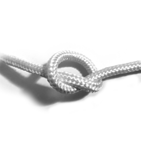
|
Figure Eight
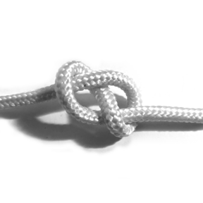
|
Double Overhand
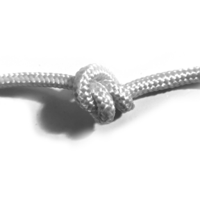
|
|
Hitch
Used to attach a rope to something. |
Tie around an object, another rope, or itself. |
Half Hitch
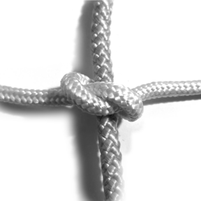
|
Figure Eight Hitch
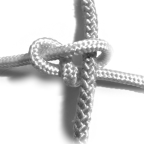
|
Double Overhand Hitch
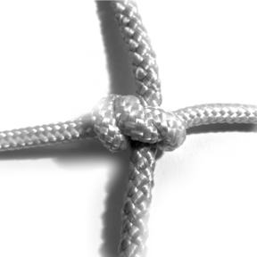
|
|
Fixed Loop
Tie on a bight to create a fixed loop. |
Tie on a bight, or follow through (see Bend). |
Overhand on a Bight
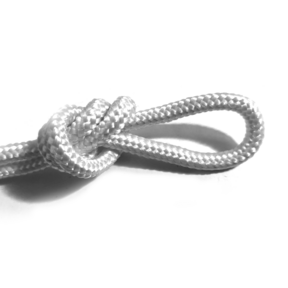
|
Figure Eight on a Bight
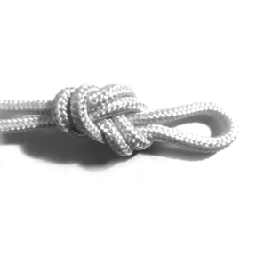
|
Double Overhand on a Bight
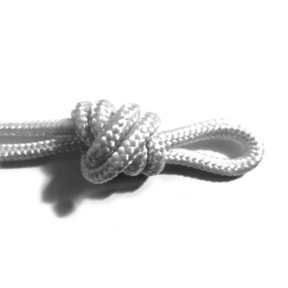
|
|
Bend Used to attach two pieces of rope. |
Loosely tie a stopper. Feed the other piece of rope along the stopper in the opposite direction. |
Overhand Follow Through Bend (Water Knot)
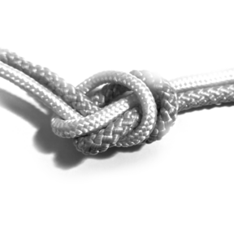
|
Figure Eight Follow Through Bend
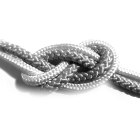
|
Double Overhand Follow Through Bend
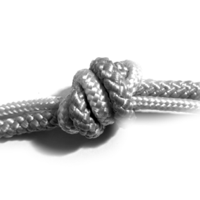
|